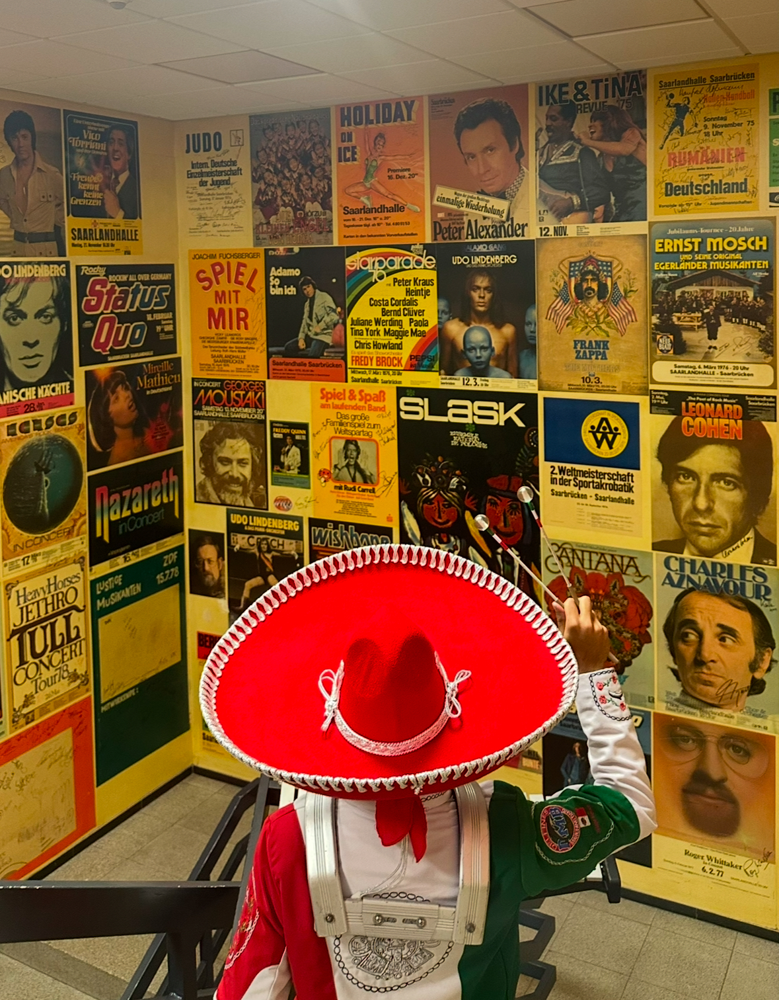

Considero totalmente que hay que aprender a diferenciar términos, es muy diferente escuchar música a vivir la música. Cuando vivimos la música, podemos sentir y transmitir las sensaciones y sentimientos que esta nos transmite a través de su letra, melodía, tono, etc. Mi más grande afición es la música, pero no solo escucharla, sino vivirla.
Es el arte de crear y organizar sonidos y silencios respetando los principios fundamentales de la melodía, la armonía y el ritmo, mediante la intervención de complejos procesos psicoanímicos. En principio puede parecer una definición complicada, con palabras que a lo mejor no comprendemos qué significan, ya que la música es algo que por fuera parecerá simple, pero el proceso de su creación es altamente complejo y un segundo puede hacer la diferencia.
Comencé mi "carrera musical" el 26 de agosto de 2017 cuando entro a Delfines Marching Band, una de las bandas de música de mayor renombre y relevancia en su estilo a nivel nacional. Cuando entro no tengo ni idea de como tocar un instrumento, y escogí la sección de teclados para comenzar a aprender de música. Actualmente, después de 7 años de experiencia, puedo decir que la música me ha abierto puertas a conocer lugares que jamás pensé pisar a esta edad, he aprendido de cosas que van más allá de la música y que me ayudan en mi vida cotidiana.
Me llamo Carlos y tengo 20 años. Nací y sigo viviendo en la ciudad de Xalapa, Veracruz. Actualmente estoy estudiando la licenciatura en Administración de Negocios Internacionales en la Universidad Veracruzana. Además, soy líder de sección de teclados en una de las bandas de marcha más importantes de México.